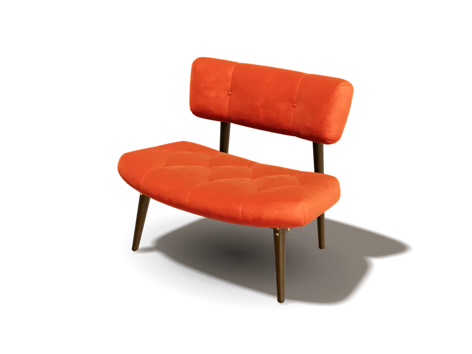
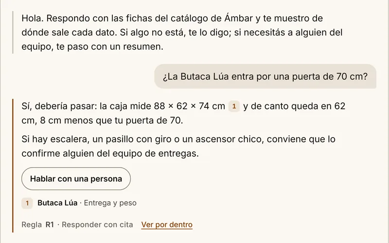
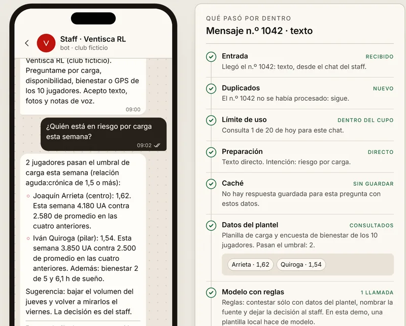
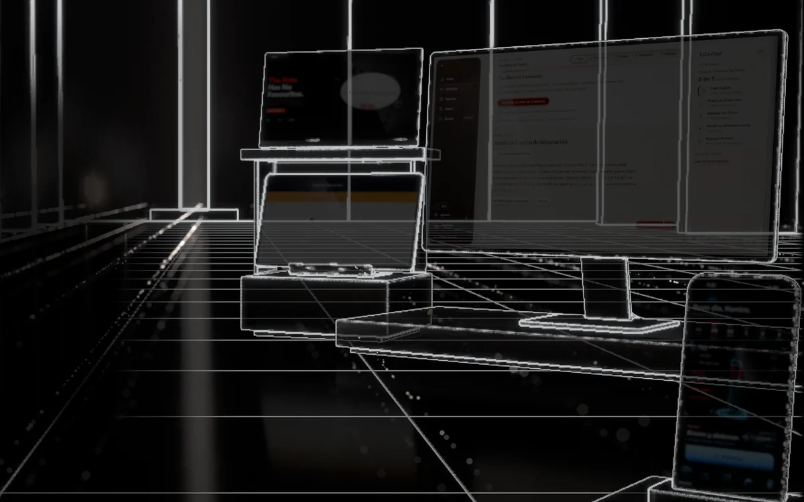
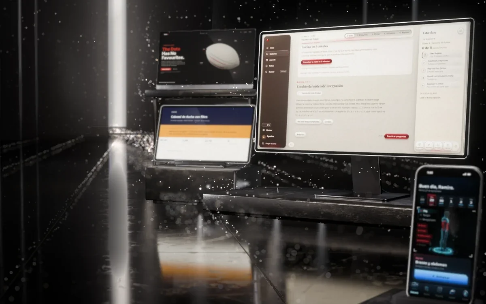
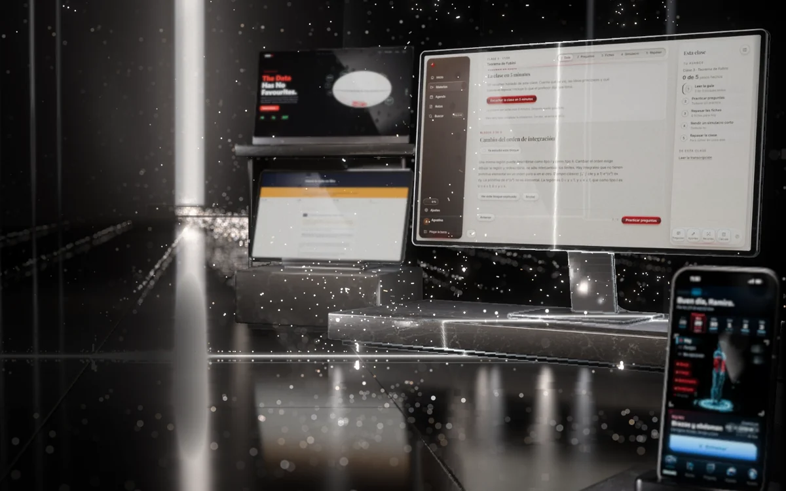

Cathedra
App de estudio para Windows: transcribe clases, arma el plan, genera exámenes y fichas, y cada respuesta cita clase y minuto.
Beta 1.2.0 con instalador para Windows · más de 5.500 pruebas automáticas
AI Product Builder · remoto desde Buenos Aires
Cuatro productos propios: una app en beta, una en uso diario y dos prototipos.
Lleva la sala a esta fase
Trabajo
En cada caso cuento qué decidí, cómo lo comprobé y qué falta.
App de estudio para Windows: transcribe clases, arma el plan, genera exámenes y fichas, y cada respuesta cita clase y minuto.
Beta 1.2.0 con instalador para Windows · más de 5.500 pruebas automáticas


App web para iPhone que arma tu rutina con tu equipo y tu tiempo reales, sobre un cuerpo 3D.
En uso diario · 746 pruebas automáticas


Asistente de IA para el staff de un equipo: se pregunta por chat y responde con los datos del plantel.
Landing con 3D en cinco idiomas · bots que reciben texto, voz y foto


Lee las reseñas de un producto (400 en la corrida real más grande), agrupa el defecto que se repite y busca quién ya lo resolvió, con su fuente.
1.200 reseñas en una prueba de carga · valida la muestra antes de gastar en el análisis
Proyectos adicionales
Son de noviembre de 2026 y no están en la escena 3D de arriba.


Secciones para tiendas Shopify: cada una es un solo archivo que le suma luz y profundidad a las fotos que la tienda ya tiene. Todavía sin probar en una tienda real.
5 secciones de menos de 40 KB, sin librerías · 0 problemas en el validador de temas de Shopify


Un motor que encuentra pymes con sitio propio, revisa su página y redacta un primer correo. Antes del envío, un verificador sin IA frena toda frase que la auditoría no midió.
Al 11 de noviembre de 2026: 57 negocios relevados · 16 borradores revisados por el verificador · 6 correos enviados
Qué sé hacer
Las etiquetas con nombre de producto llevan al caso. «Interno» es trabajo propio que no publico; «cliente», un trabajo para un tercero que no nombro.
Para marcas
Hechas con el mismo método que mis productos. Ámbar Muebles es una marca ficticia creada para estas demos, y el club de la sala de bots también. Las cifras de terceros van con su fuente; la de los bots es una medición mía.

Demo 01 · e-commerce

Demo 02 · atención al cliente

Demo 03 · bots
Método
Generar código ya cuesta poco. Abajo está la parte que hago yo, cada una con un ejemplo real.



Las tres vistas son la sala de la portada: modelada y renderizada en Blender y compuesta en vivo por un motor WebGL2 propio, sin bibliotecas. La construyeron agentes con este método; yo la definí y la verifiqué. Detalle en créditos →
Escribo qué duele, a quién y cómo se va a notar que se resolvió.
El flujo, la vara de calidad y el criterio de aceptación quedan por escrito antes de pedir una línea.
Trabajan en tandas acotadas, cada una con su brief, sus pruebas y sus capturas obligatorias.
Corro las pruebas y miro las capturas a resolución real. Lo que no coincide vuelve al paso 3 con el motivo.
Escribo el brief, el flujo y la vara de calidad antes de pedirle una línea a un agente. También decido qué queda afuera.
Fortal: las reglas de entrenamiento (progresión doble, volumen por tiempo disponible, pesos que de verdad se pueden armar) se escribieron antes de la primera pantalla.
La acepto, la corrijo o la devuelvo con el motivo por escrito. Cuando hay alternativas, elijo una y anoto por qué.
coro: descarté ordenar las quejas por cantidad y elegí medir concentración. Si un solo tema junta el 47 % de las quejas, ahí hay un defecto.
Cada tanda termina en pruebas automáticas y capturas a resolución real. Algo está hecho cuando lo vi renderizado.
Cathedra: más de 5.500 pruebas automáticas. Fortal: 746, y cada fase verificada con capturas a 1206×2622, una por una.
Confío en una entrega cuando la prueba pasa y la captura coincide con el brief. Si no puedo explicar cómo llegó a ese resultado, la rehago aunque funcione.
Sobre mí
Ramiro Bales. Construyo productos propios desde la idea hasta la publicación: escribo el brief, dirijo a los agentes de IA que programan y verifico lo que entregan. Además curso la Licenciatura en IA y Ciencia de Datos en UADE. Español nativo, inglés B2 (Duolingo English Test). Busco trabajo remoto como AI Product Builder, en automatización con IA o como tecnólogo creativo.
Última actualización: noviembre de 2026
Contacto
Respondo en el día.